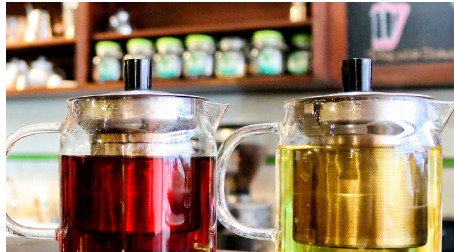
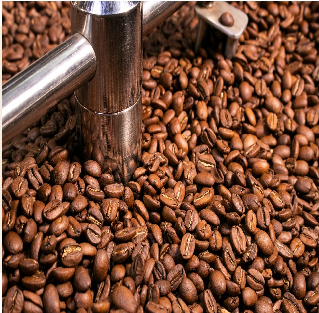

Nuestra Historia
- Lima Café -
Hace 12 años empezamos esta aventura cafetera en el centro de Lima,
impulsados por nuestro amor y pasión por el buen café (100% peruano),
entendiendo que detrás de un café de especialidad hay un proceso lento
que desarrollará sus aromas, sabores y garantizará la calidad del producto.

MISIÓN
Ofrecer a nuestros clientes los mejores productos a
base de café 100% peruano, recién molido y tostado,
manteniendo altos estándares de calidad, desde la cosecha hasta la presentación.

VISIÓN
Ser la cafetería de especialidad líder del Centro de Lima,
ofreciendo el mejor café de raíces peruanas, promoviendo su
consumo y su correcta preparación.